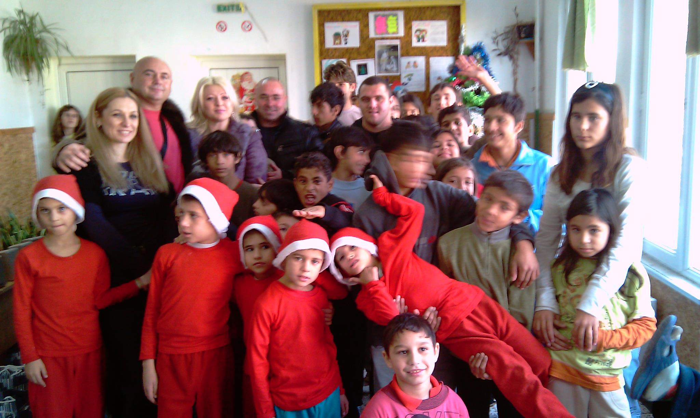
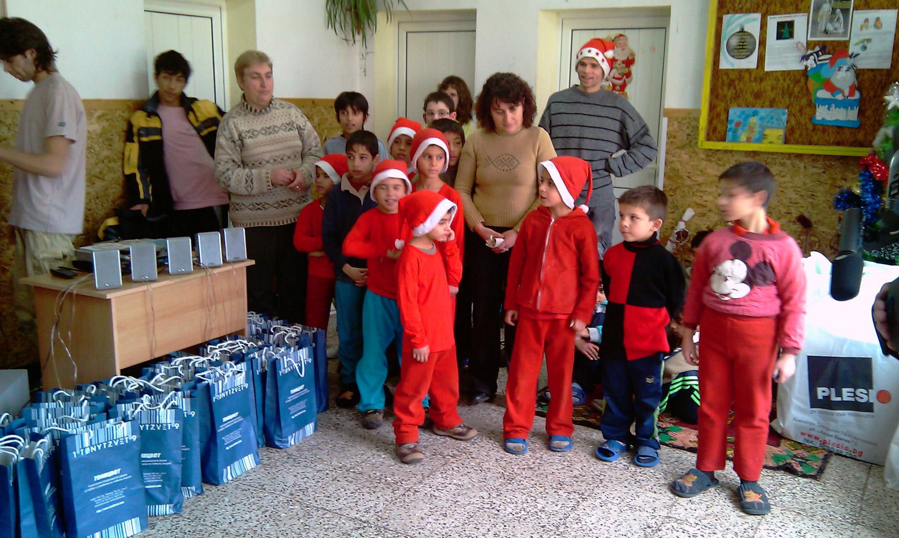
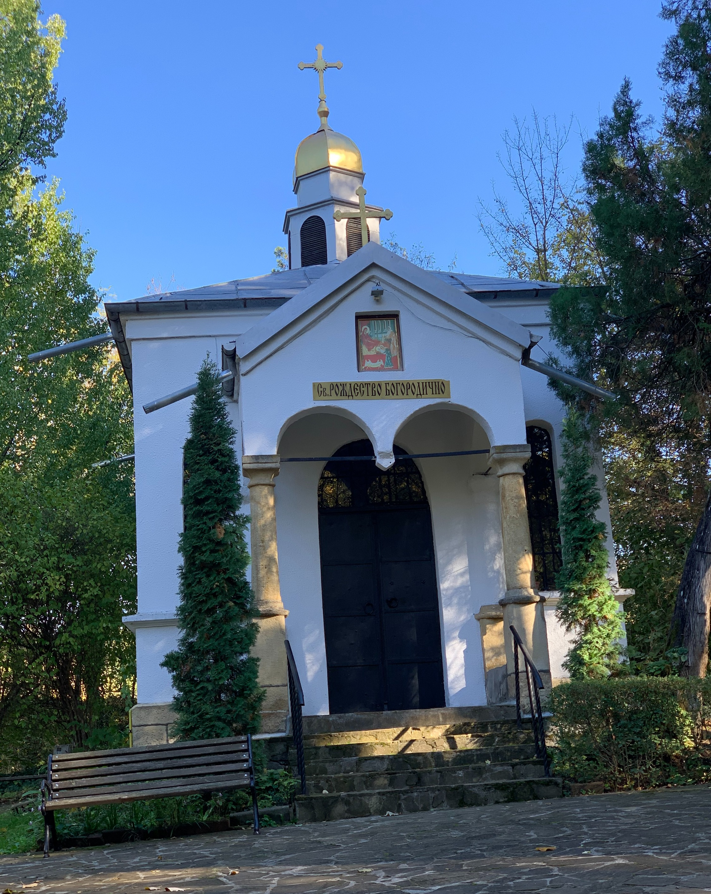
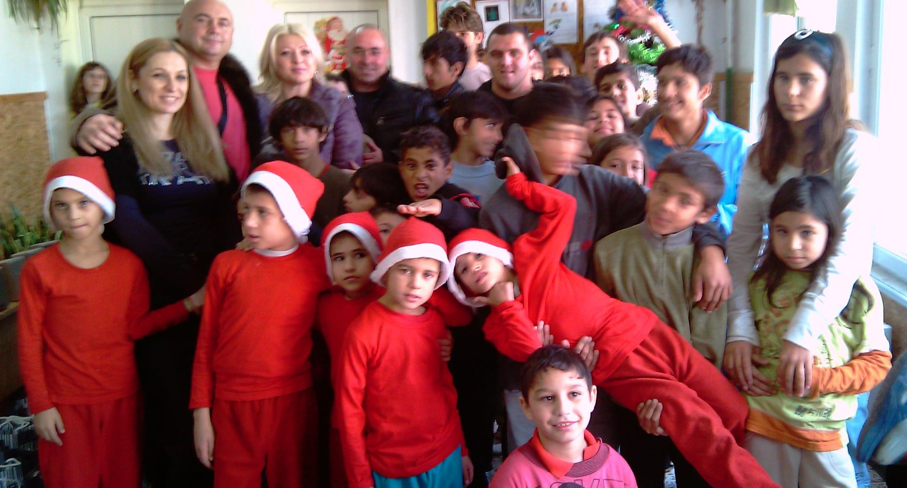
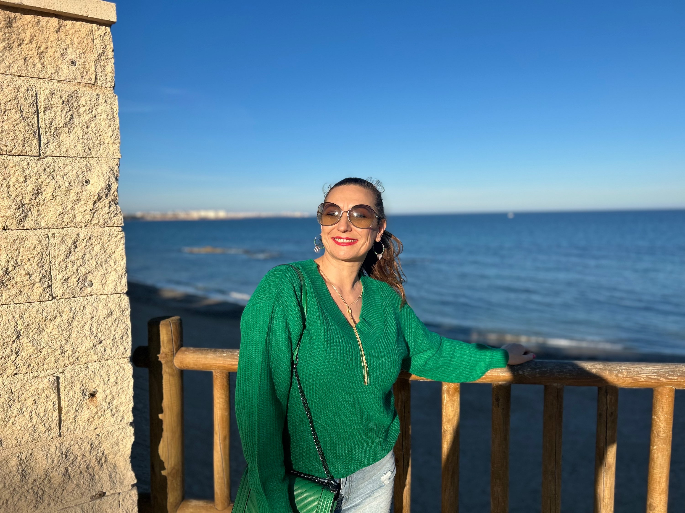

Photos from our activities






"Kindness is the shortest path to the heart."
Since 2008 we have worked to preserve Bulgaria's spiritual and cultural heritage, and to support children in need.
We support the preservation and development of spiritual and cultural heritage — from archaeological excavations to the restoration of chapels and spiritual centres in small communities.
We help children's homes and families so that children receive care, attention and a chance at a better life. Every donation goes where the need is greatest.
Long-term support for a home for disadvantaged children in the town of Popovo.
Funding of archaeological excavations of the late-antique fortress Kovachevsko Kale.
Construction works on the chapel of the Nativity of the Holy Mother of God.





We are raising funds to build spiritual centres preserving cultural heritage across regions and small communities in Bulgaria.
Support the campaign